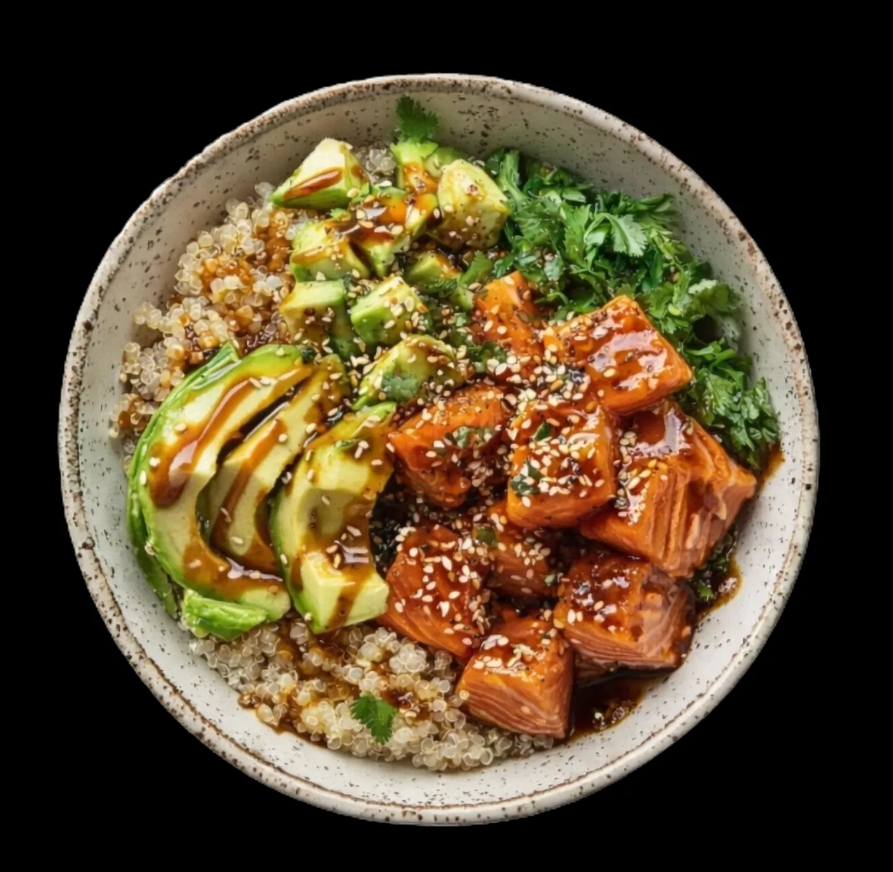
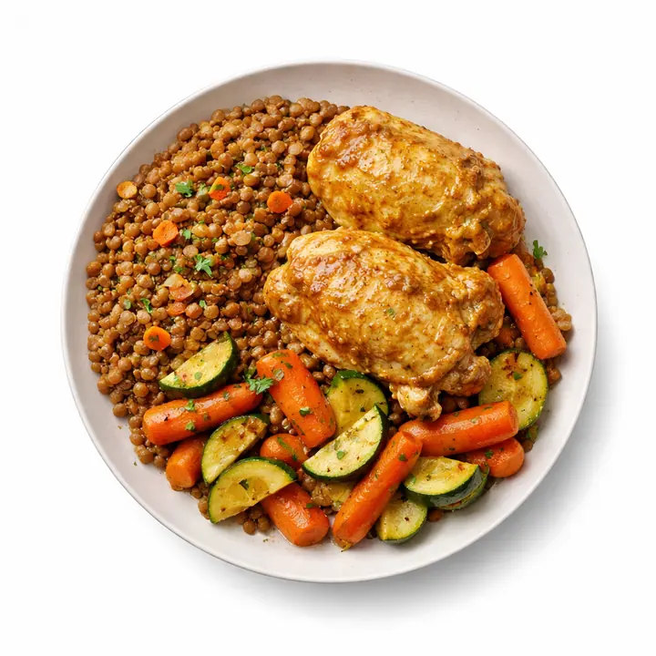

Des plats de chef au bureau. Vos macros remplies toutes seules.
Nos déjeuners sont conçus avec un chef passé par le Cheval Blanc, livrés à Paris et à La Défense, et enregistrés dans votre suivi nutritionnel le jour de la livraison. Vous ne saisissez rien.

Pourquoi Natty existe
Bien manger au bureau ne devrait pas être un arbitrage.
Treize heures cinq, la réunion se termine. On descend prendre un truc rapide, on le mange d'une main, l'autre sur la souris. À treize heures trente-cinq c'est fini, et on ne sait déjà plus ce qu'on a avalé.
Le déjeuner est le seul moment de la journée qu'on sacrifie sans jamais l'inscrire à l'ordre du jour. On protège les créneaux de réunion. Celui-là, jamais. Pourtant c'est lui qui décide de l'après-midi.
Natty prend le problème par le seul bout réaliste : rendre le bon déjeuner plus simple que le mauvais. Un chef écrit la recette au gramme, les plats arrivent au bureau, c'est prêt en deux minutes. Au prix d'un déjeuner de cantine.
Et le plat se compte tout seul. Calories et macronutriments arrivent dans votre application sans que vous ayez rien à photographier. Personne d'autre ne fait ça en France aujourd'hui.
En trois gestes
De la carte à votre suivi, sans rien saisir.
Vous composez votre semaine
De un à dix plats. Vous changez la sélection chaque semaine, vous mettez en pause quand vous partez, vous arrêtez quand vous voulez.
On cuisine et on livre
Les plats sont préparés en début de semaine et livrés au bureau. Deux minutes au micro-ondes et c'est prêt. lieu de préparation et durée de conservation à préciser
Le suivi se remplit seul
Le jour de la livraison, le plat entre dans votre journée avec ses calories et ses macros. Votre nutritionniste voit la même chose que vous.
Ce que personne d'autre ne fait
Le plat que vous mangez est déjà compté.
Les applications de suivi vous demandent de peser, photographier, chercher dans une base. Les services de livraison, eux, ne savent rien de vos objectifs. Natty tient les deux bouts : nous connaissons la recette au gramme, donc nous savons exactement ce que vous avez dans l'assiette.

Tarifs
Un prix au plat. Rien d'autre.
Neuf euros, c'est le prix d'un déjeuner de cantine. Avec un chef derrière, et sans la queue.
À l'unité
- Vous commandez quand vous voulez
- Aucun engagement
- Livraison incluse
Abonnement
- De 1 à 10 plats par semaine
- Suivi nutritionniste inclus
- Vos plats enregistrés dans l'application
- Pause et résiliation quand vous voulez
| Par semaine | Prix du plat | Total semaine | Par mois |
|---|---|---|---|
| 3 plats | 9,00 € | 27 € | 108 € |
| 5 plats | 9,00 € | 45 € | 180 € |
| 10 plats | 9,00 € | 90 € | 360 € |
Pour les entreprises
Le seul créneau que personne ne protège.
L'Organisation internationale du travail a consacré un rapport entier au déjeuner au bureau. Sa conclusion : la qualité de l'alimentation sur le lieu de travail fait varier la productivité jusqu'à 20 %. C'est plus que ce que promet la plupart des outils qu'on déploie pour gagner en efficacité.
Derrière les plats
Une cuisine, pas une usine.
Francis D'Almeida
Passé par le Cheval Blanc. Il écrit les fiches techniques de chaque plat, ingrédient par ingrédient et geste par geste. C'est ce qui nous permet de connaître la composition exacte de ce que vous mangez.
Romane Dicko
Judokate en plus de 78 kg, au PSG Judo, en route vers Los Angeles 2028. Elle porte avec nous l'idée qu'une alimentation de haut niveau doit être traçable, du producteur à l'assiette. citation à recueillir
Questions
Ce qu'on nous demande le plus.
Où livrez-vous ?
Paris et La Défense, au bureau. arrondissements et créneaux à préciser
Comment les plats se conservent-ils ?
mode de conservation, durée et température à compléter
Puis-je changer mes plats chaque semaine ?
Oui. La sélection se modifie dans l'application jusqu'à la clôture des commandes. jour et heure de clôture à préciser
Comment arrêter l'abonnement ?
Depuis votre compte, sans appel ni courrier. préavis à préciser
En quoi consiste le suivi nutritionniste ?
Un nutritionniste ajuste vos objectifs caloriques et vos macros au fil des semaines, à partir de ce que vous mangez réellement. Vous échangez avec lui par messagerie dans l'application et vous pouvez prendre rendez-vous.
Et les allergènes ?
liste des allergènes par plat à publier — obligatoire avant la mise en ligne
Commencez par trois plats.
27 € la semaine, résiliable quand vous voulez.
Composer ma première semaine